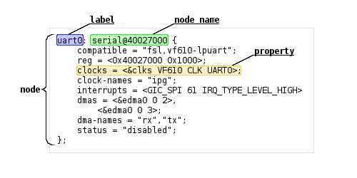
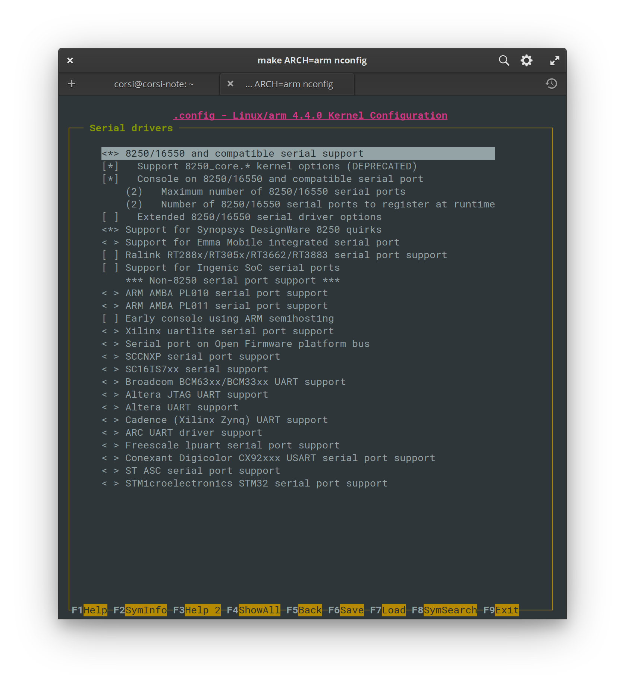

Device Driver¶
Iremos nesse tutorial desenvolver um device driver para o kernel do linux, esse device irá abstrair o controle do LED e o acesso a chave SW do kit de desenvolvimento.
Kernel¶
O Linux é um kernel monolitico, onde todo código referente ao sistema operacional acontece no kernel space.

O kernel do Linux é responsável, dentre outras coisas, por:
- gerenciar processos e taréfas
- scheduling
- virtualização, controle de grupos/ usuários
- gerenciamento de memória/ paginação
- comunicação inter-processos
- entrada/saída
- gerenciamento de arquivos
- device drivers
- abstração de hardware

Mapa da arquitetura interna do kernel do linux
Microkernel
O microkernel é uma alternativa ao kernel monolitico, nessa arquitetura o kernel implementa o mínimo necessário.

GNU
O kernel do linux faz uso de diversos softwares criados e disponíveis pela comunidade GNU (como o gcc, gdb, make, e muitos outros por isso é muitas vezes conhecido como GNU/Linux.

Userspace vs Kernel Space¶
Grande parte dessa secção foi traduzida de https://www.ctrlinux.com/blog/?p=40
Userspace é uma região de memória virtual onde todos os programas do usuário são executados. Os programas que fazem parte do userspace são executados em um modo de operação da CPU chamado de unprivileged, onde nem todas instruções e registradores estão disponíveis.
O ARM suporta um total de 7 modos de execução, sendo que apenas o usermode é não privilegiado:
- User mode – All user level applications run in this mode.
- FIQ Fast Interrupt Mode – Used to handle interrupts classified as “fast”, get in and get out type of interrupts.
- IRQ Mode – Used to handle device interrupts and non FIQ interrupts.
- Supervisor mode (default CPU boot mode). Used by the OS and software interrupts (SWIs).
- Abort – Used to handle violations caused by erroneous memory accesses
- Undefined – Used to handle undefined instructions
- System – A privileged mode with the same register set as usermode, used to run exceptions handlers.
Material retirado de: https://www.ctrlinux.com/blog/?p=40
userspace¶
Para entender melhor o userspace, vamos imaginar o que acontece quando um programa tenta acessar uma região de memória que pertence a ao kernel (modo privilegiado).
Quando criamos um ponteiro e acessamos uma memória, esse comando é traduzindo para uma instrução do tipo LOAD em assembly. A instrução LOAD entra no pipeline da CPU e no estágio de execução a CPU passa o endereço da instrução para o hardware responsável por gerenciar a memória: Memory Management Unit (MMU). O MMU traduz o endereço de memória virtual para o endereço físico (pagina de memória), nesse ponto o MMU verifica o modo de execução atual da CPU e se a região de memória pode ser acessada pelo modo atual. No nosso caso a CPU irá mudar o modo do processador para Abort e tratar o acesso ao endereço de memória não autorizado, causando o encerramento do programa com seg fault.
Programas no userspace se comunicam com o kernel via chamadas de sistema1 (system calls), essas chamadas viram interrupções de software que serão processadas pelo kernel.
Kernel Space¶
As vantagens de trabalhar com o kernel space são: Poder manipular diretamente os periféricos do hardware, poder tratar interrupções de hw. Com grandes poderes vêm grandes responsabilidades, erros nesse modo podem causar kernel panic e travar todo o sistema.
Kernel Module / Device driver¶
Um módulo do kernel é um código compilado que pode ser lincado com o kernel em tempo de execução (como alterar a asa de um avião em movimento), um módulo pode ser um driver de dispositivo, mas não necessariamente.
Device driver¶
Referências:
Drivers de dispositivos são responsáveis por implementar a parte de baixo nível de configuração, comunicação e gerenciamento do hardware (periféricos, memória, CPU). No repositório do kernel do Linux, os drivers estão localizados em: linux/drivers/ e estão organizados por categoria:
accessibility dca ide mfd pnp spmi
acpi devfreq idle misc power ssb
amba dio iio mmc powercap staging
android dma infiniband modules.builtin pps target
ata dma-buf input mtd ps3 tc
atm edac iommu net ptp thermal
auxdisplay eisa ipack nfc pwm thunderbolt
base extcon irqchip ntb rapidio tty
bcma firewire isdn nubus ras uio
block firmware Kconfig nvdimm regulator usb
bluetooth fmc leds nvme remoteproc uwb
built-in.a fpga lguest nvmem reset vfio
built-in.o gpio lightnvm of rpmsg vhost
bus gpu macintosh oprofile rtc video
cdrom hid mailbox parisc s390 virt
char hsi Makefile parport sbus virtio
clk hv mcb pci scsi vlynq
clocksource hwmon md pcmcia sfi vme
connector hwspinlock media perf sh w1
cpufreq hwtracing memory phy sn watchdog
cpuidle i2c memstick pinctrl soc xen
crypto i3c message platform spi zorro
No linux os drivers podem ser desenvolvidos/classificados em basicamente três tipos: char module, block module, network module.
-
character device: É usado no caso que o driver pode ser acessado com um strem de bytes (como um arquivo). Deve implementar no mínimo as seguintes chamadas de sistema:
open/close/read/write. O/dev/consolee/dev/ttysão exemplos desse tipo de device. Uma diferença entre um arquivo e umchar devé que no arquivo você pode mover o ponteiro para frente e para traz, mas nesse tipo de device não, você só pode ir para frente. -
block device: Usado para implementar acesso a disco físico, esse tipo de driver opera com blocos de bytes (normalmente 512 bytes).
-
network device: Utilizado para implementar uma interface de rede (como o
loopback/ wlan0/ ...). Essa interface é capaz de receber e enviar pacotes de dados, controlado pelo sistema de rede do kernel.
Device Tree (dts)¶
Info
Isso acontece apenas em sistemas embarcados. Para saber como o Kernel do linux sabe quais são os dispositivos disponíveis acesse: https://unix.stackexchange.com/questions/399619/why-do-embedded-systems-need-device-tree-while-pcs-dont
Como o kernel do linux sabe quais são os dispositivos e drivers associados a eles? Um arquivo de configuração chamado de device tree é passado pelo boot para o kernel do Linux indicando os periféricos, e quais são os drivers associados a eles.
u-boot¶
A programação da FPGA é realizada pelo u-boot, antes da inicialização do
Kernel do Linux. No nosso caso, o u-boot foi pré configurado para ler o arquivo
soc_system.rbf que está na partição do SDCARD junto com o kernel (zImage).
Explicação do processo de boot - até 1:50 minutos
O u-boot antes de inicializar o kernel do Linux, busca esse arquivo na partição do SDCARD, o extraí e programa "magicamente" a FPGA. Nessa mesma partição temos mais dois arquivos: u-boot.scr e socfpga.dtb. O primeiro é um script de inicialização do boot na qual o u-boot lê para saber quais passos ele deve executar (se precisa carregar a fpga, onde está o kernel, ..., são os passos de inicialização), já o socfpga.dtb é o device tree do Linux, o dtb é um binário, que foi criado a partir de outro arquivo, o .dts, e ele contém informações sobre o hardware que é passado para o kernel no momento de inicialização.
Device Tree for Dummies! - Thomas Petazzoni, Free Electrons
dtb (dts compilado)¶
O dtb é utilizado como ferramenta para indicar ao kernel quais são as
configurações de hardware disponíveis, você não precisa recompilar o kernel caso
o endereço de memória de algum periférico muder, basta informar no dts. Essa
ferramenta é muito importante para sistemas embarcados, na qual, cada hardware
possui sua especificidade.
O dtb é gerado a partir de arquivo texto no formato dts que é então gerado
pelas informações de hardware extraída do Platform Designer que são salvas
no arquivo: .sopcinfo, o mesmo arquivo que é utilizado pelo Eclipse-NIOS para
gerar o BSP nos tutoriais passados. O BSP no Linux é chamado de dts e
possui um formato padrão que deve ser seguido!
entendendo o dts¶

O começo do nosso .dts tem a definição das CPUs que estão
disponíveis no CHIP:
cpus {
#address-cells = <1>;
#size-cells = <0>;
enable-method = "altr,socfpga-smp"; /* appended from boardinfo */
hps_0_arm_a9_0: cpu@0x0 {
device_type = "cpu";
compatible = "arm,cortex-a9-16.1", "arm,cortex-a9";
reg = <0x00000000>;
next-level-cache = <&hps_0_L2>; /* appended from boardinfo */
}; //end cpu@0x0 (hps_0_arm_a9_0)
hps_0_arm_a9_1: cpu@0x1 {
device_type = "cpu";
compatible = "arm,cortex-a9-16.1", "arm,cortex-a9";
reg = <0x00000001>;
next-level-cache = <&hps_0_L2>; /* appended from boardinfo */
}; //end cpu@0x1 (hps_0_arm_a9_1)
}; //end cpus
Vamos ver em mais detalhes o hps_0_uart0 do nosso dts:
hps_0_uart0: serial@0xffc02000 {
compatible = "snps,dw-apb-uart-16.1", "snps,dw-apb-uart";
reg = <0xffc02000 0x00000100>;
interrupt-parent = <&hps_0_arm_gic_0>;
interrupts = <0 162 4>;
clocks = <&l4_sp_clk>;
reg-io-width = <4>; /* embeddedsw.dts.params.reg-io-width type NUMBER */
reg-shift = <2>; /* embeddedsw.dts.params.reg-shift type NUMBER */
status = "okay"; /* embeddedsw.dts.params.status type STRING */
}; //end serial@0xffc02000 (hps_0_uart0)
}; //end serial@0x100020000 (jtag_uart)
Ele indica que no nosso hardware, temos um componente serial no endereço
0xffc02000 que é compatível com os drivers: snps,dw-apb-uart-16.1 e.ou
snps,dw-apb-uart, que é implementado no Driver: 8250 no kernel do Linux:
https://github.com/torvalds/linux/blob/master/drivers/tty/serial/8250/8250_dw.c.
E esse driver está configurado como ativo no nosso kernel:

E é por conta disso que conseguimos acessar o kit com USB (screen).
Parâmetro CONFIG_SERIAL_8250_CONSOLE
CONFIG_SERIAL_8250_CONSOLE: │
│ │
│ If you say Y here, it will be possible to use a serial port as the │
│ system console (the system console is the device which receives all │
│ kernel messages and warnings and which allows logins in single user │
│ mode). This could be useful if some terminal or printer is connected │
│ to that serial port. │
│ │
│ Even if you say Y here, the currently visible virtual console │
│ (/dev/tty0) will still be used as the system console by default, but │
│ you can alter that using a kernel command line option such as │
│ "console=ttyS1". (Try "man bootparam" or see the documentation of │
│ your boot loader (grub or lilo or loadlin) about how to pass options │
│ to the kernel at boot time.) │
│ │
│ If you don't have a VGA card installed and you say Y here, the │
│ kernel will automatically use the first serial line, /dev/ttyS0, as │
│ system console. │
│ │
│ You can set that using a kernel command line option such as │
│ "console=uart8250,io,0x3f8,9600n8" │
│ "console=uart8250,mmio,0xff5e0000,115200n8". │
│ and it will switch to normal serial console when the corresponding │
│ port is ready. │
│ "earlycon=uart8250,io,0x3f8,9600n8" │
│ "earlycon=uart8250,mmio,0xff5e0000,115200n8". │
│ it will not only setup early console. │
│ │
│ If unsure, say N. │
│ │
│ Symbol: SERIAL_8250_CONSOLE [=y] │
│ Type : boolean │
│ Prompt: Console on 8250/16550 and compatible serial port
│ Location: │
│ -> Device Drivers │
│ -> Character devices │
│ -> Serial drivers │
│ -> 8250/16550 and compatible serial support (SERIAL_8250 [=y]) │
│ Defined at drivers/tty/serial/8250/Kconfig:60 │
│ Depends on: TTY [=y] && HAS_IOMEM [=y] && SERIAL_8250 [=y]=y │
│ Selects: SERIAL_CORE_CONSOLE [=y] && SERIAL_EARLYCON [=y] │
│
Para mais informações sobre o dts: